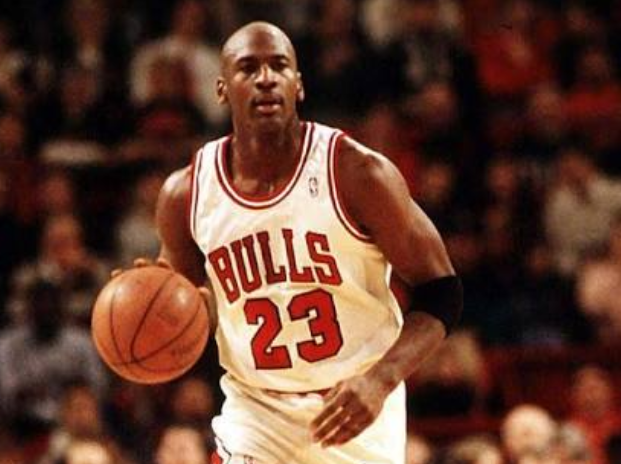
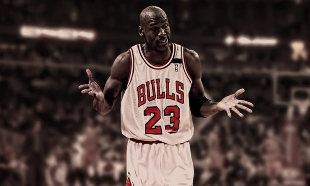

Michael Jordan, 17 Şubat 1963 tarihinde New York’ta dünyaya gelmiştir. Daha sonraları ailesi büyüdüğü Kuzey Karolina’ya taşınmıştır. Yaşamsal alanda ikinci sınıf statüde olması ve boyunun kısa olması nedeniyle Lise takımına girmekte zorlanmıştır. Bunun yerine beyzbol gibi diğer spor dallarına yoğunlaşmıştır. Michael Jordan, yılın kolej takımı olan Kuzey Karolina Üniversitesi’ne gitmiştir. 1984 yılında Chicago Bulls tarafından NBA listesine kaydedilmiştir. 1984 yılında ABD Olimpiyat basketbol takımında yer almış ve ekip ile ilk altın madalyasını kazanmıştır.
1984 sezonunda Michael Jordan’ın üstün yetenekli bir oyuncu olduğu ortaya çıkmıştır. İnsanlar bu heyecan verici yeni yetenekleri görmeye başlarken Chicago Bulls’daki taraftar sayısı da artmıştır. Jordan’ın mükemmel atış istatistikleri, kalitesi, becerisi, akrobatik hareketleri ve kendine özgü pota altı dalışları vardır. Ayrıca basketbolda en iyi savunma oyuncusu olarak ünlenmiştir. Bu atletik mükemmelliği, alçak gönüllü karakteri ile birleşince halkın sevgisi kaçınılmaz olarak ortaya çıkmıştır.
1980’li yılların sonlarında Jordan’ın başarısı gittikçe artırıyordu. Chicago Bulls takımına kaptanlık yapmıştır. NBA yaşamı boyunca, Jordan uzun süredir devam eden NBA istatistiklerinin çoğunu bozmuştur. 1988-89 sezonunda maç başına 32.5 sayı ile lige öncülük etmiştir. 1992 yılında Jordan Olimpiyatlara dönmüştür. Tam bir profesyonel olarak bu kez ABD’nin “Rüya Takımı’nın bir parçası olmuştur. ABD, Olimpiyat altınını kolaylıkla kazanmıştır. Rakipleri sıklıkla Michael Jordan ve rüya takımı ile aynı sahada bulunmaktan onur duyduklarını ifade etmişlerdir.
Bununla birlikte, 1993 yılında, bir dizi kişisel zorluk onu geçici olarak sahalardan çekilmeye zorlamıştır. Babası silahlı soygun sırasında öldürülmüştür. Bu Jordan’ı yıkan bir olay olmuştur. Ayrıca kendi kumar sorunlarıyla da mücadele etmek zorunda kalmıştır.Kısa bir süre için, Birmingham Barons takımı için 1994 sezonunda beyzbola girmiştir. Ancak, 1994-95 sezonunun sonunda basketbola geri dönmüştür. Gençlik hızının bir kısmını kaybetmesine rağmen Jordan hala üst düzey performans sergilemiştir ve Chicago Bulls’u bazı muhteşem performanslarla yarı finale taşımıştır. Ertesi yıl, 1995-96 yılları arasında Chicago Bulls’u şampiyonluğa götürmüştür. Jordan, 2002-03 sezonunda 40’ıncı doğum gününe kadar basketbol oynamaya devam etmiştir. Emekli olduktan sonra oyun ortalaması 30.1 ve toplam 32.292 puanla toplamda 1.072 adet oyun oynamıştır. Emekliliğinin ardından yönetim ve mülkiyet konuları üzerine yoğunlaşmıştır. 2006 yılında NBA takımlarından Charlotte Bobcats’ta bir azınlık hissesi satın almış ve daha sonra bu hisseye tamamen sahiplik kazanmıştır. Ve bir lig takımının çoğunluk hissesinin sahibi olan ilk eski NBA yıldızı olmuştur. 2010 yılında Forbes Dergisi tarafından Jordan kazandığı 55 milyon dolar ile dünyadaki 20. en güçlü ünlü olmuştur. Forbese göre Jordan, Nike için 1 milyar dolarlık satış anlaşması gerçekleştirmiştir. 1999 yılında, koordinatörler tarafından 20. yüzyılın en büyük Kuzey Amerika sporcusu seçilmiş ve Associated Gazetesi’nin yüzyıl sporcuları listesinde Babe Ruth’dan sonra yer almıştır.